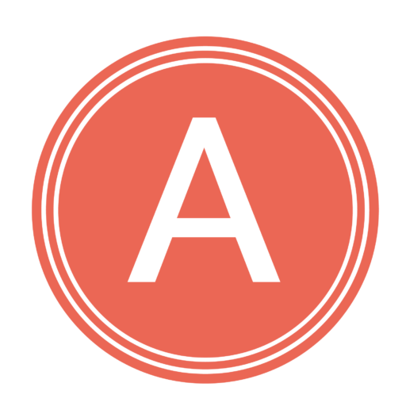
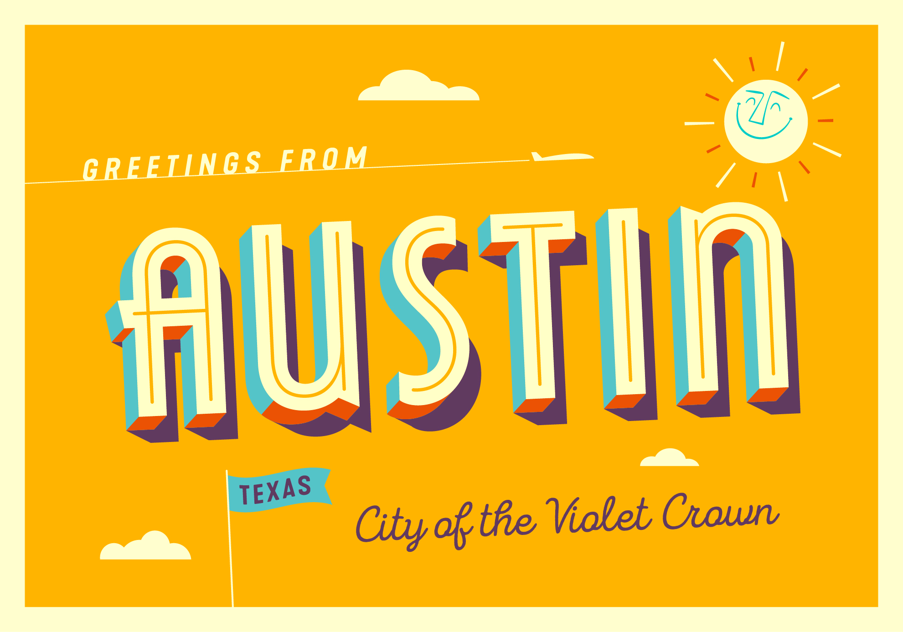
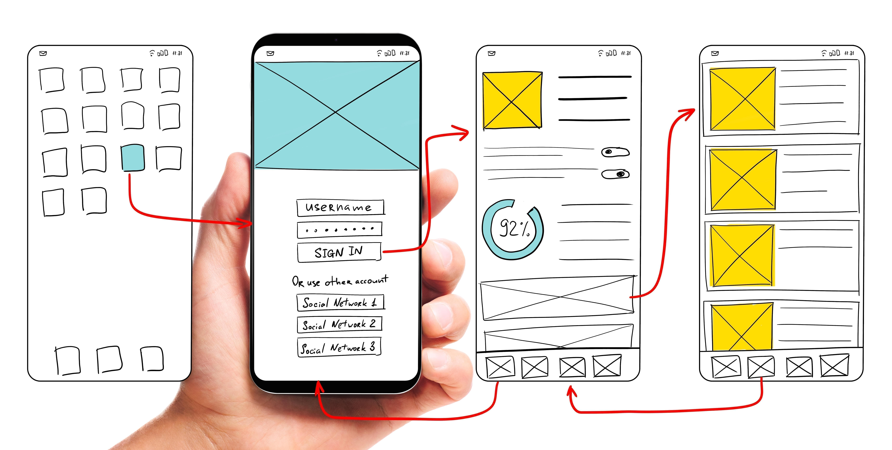

<!DOCTYPE html><html lang="en-us"><head><meta charset="UTF-8"><meta name="description" content="Assure Studios- Austin Web Designer help Call for a free consultation (972) 898-7128"><title>Assure Studios-Austin Web Designer</title><meta name="viewport" content="width=device-width"><meta http-equiv="content-language" content="en-us"><!-- Google Tag Manager -->
<script>(function(w,d,s,l,i){w[l]=w[l]||[];w[l].push({'gtm.start':
new Date().getTime(),event:'gtm.js'});var f=d.getElementsByTagName(s)[0],
j=d.createElement(s), dl = l != 'dataLayer' ? '&l=' + l : '';j.async=true;j.src=
'https://www.googletagmanager.com/gtm.js?id='+i+dl;f.parentNode.insertBefore(j,f);
})(window,document,'script','dataLayer','GTM-NVKJP5L');</script>
<!-- End Google Tag Manager -->
<!-- Meta Pixel Code -->
<script>
!function(f,b,e,v,n,t,s)
{if(f.fbq)return;n=f.fbq=function(){n.callMethod?
n.callMethod.apply(n,arguments):n.queue.push(arguments)};
if(!f._fbq)f._fbq=n;n.push=n;n.loaded=!0;n.version='2.0';
n.queue=[];t=b.createElement(e);t.async=!0;
t.src=v;s=b.getElementsByTagName(e)[0];
s.parentNode.insertBefore(t,s)}(window, document,'script',
'https://connect.facebook.net/en_US/fbevents.js');
fbq('init', '223752926464522');
fbq('track', 'PageView');
</script>
<noscript></noscript>
<!-- End Meta Pixel Code --></head><link href="https://cdn.jsdelivr.net/npm/bootstrap@5.0.2/dist/css/bootstrap.min.css" rel="stylesheet" integrity="sha384-EVSTQN3/azprG1Anm3QDgpJLIm9Nao0Yz1ztcQTwFspd3yD65VohhpuuCOmLASjC" crossorigin="anonymous"><link rel="stylesheet" href="https://use.typekit.net/mtg4ahu.css"><link rel="stylesheet" href="./css/main1.css"><link rel="icon" type="image/png" href="images/favicon.png"><link rel="apple-touch-icon" sizes="180x180" href="/apple-touch-icon.png"><link rel="icon" type="image/png" sizes="32x32" href="/favicon-32x32.png"><link rel="icon" type="image/png" sizes="16x16" href="/favicon-16x16.png"><link rel="manifest" href="/site.webmanifest"></html><div class="overlay"></div><!-- Google Tag Manager (noscript) -->
<noscript><iframe src="https://www.googletagmanager.com/ns.html?id=GTM-NVKJP5L"
height="0" width="0" style="display:none;visibility:hidden"></iframe></noscript>
<!-- End Google Tag Manager (noscript) --><header class="headerTop" id="header"><div class="logo"><a href="./"><span>Assure Studios</span></a></div><div class="mobile-menu-toggler"><svg viewbox="0 0 100 80" width="40" height="40"><rect width="100" height="4"></rect><rect y="30" width="100" height="4"></rect><rect y="60" width="100" height="4"></rect></svg></div><nav class="nav-bar"><div class="mobile-close"><span>x</span></div><div class="nav-link home-link"><a title="Home" href="./"> home</a><hr></div><div class="nav-link about-link"><a title="About Assure Studios" href="about.html">about</a><hr></div><div class="nav-link"><a title="Assure Studios portfolio" href="portfolio.html">portfolio</a><hr></div><div class="nav-link"><a title="Assure Studios blog" href="./blog/">blog</a><hr></div><div class="nav-link headerTel"><a href="tel:9728981728" title="Give us a call">phone: 972-898-7128</a><hr></div><div class="nav-link"><button class="header-button" onClick="location.href='./contact.html'" title="Free Consultation">Free Consultation</button></div></nav></header><div class="wrapper"><div class="container-fluid section intro"><div class="row flex-wrap-reverse align-items-center"><div class="col-xl-7"><h1><span class="titleExpander">An Austin</span><br> & DFW area web designer</h1><p>If you're an entrepreneur looking to start a business in Austin, you need to make sure your website and digital marketing are up to par. Fortunately, we offer free SEO audits to help you get started. We'll review your website and provide feedback on how to improve your site's ranking in search engines.</p><p>In addition, we'll give you a free SEO consultation to help you develop a digital marketing strategy that will set you apart from the competition.</p><p>And if you're concerned about your web performance, we also offer free web performance audits. So don't wait - contact us today and let us help you take your business to the next level.</p><p>Here's a look at our digital marketing services and our web process.</p></div><div class="col-xl-5"><picture><source media="(max-width: 400px)" srcset="./img/austin-local-400.jpg"><source media="(max-width: 799px)" srcset="./img/austin-local-800.jpg"><source media="(min-width: 1500px)" srcset="./img/austin-local-1900.jpg"></picture></div></div></div><div class="container-fluid content-section"><div class="row"><div class="col-xl-12"><h2 class="mt-5">Web Design and web development</h2></div><div class="col-xl-12"><p>A <strong>web designer</strong> is a graphic artist who designs the layout and appearance of a website. Web designers use various tools to create visually appealing webpages that are easy to navigate. They also assess the needs of a website and its users, and design pages that meet those needs. Web designers often work with web developers to create a complete website.</p><p>A <strong>web developer</strong> is responsible for building and maintaining websites. They use coding languages to create site features and functionality, and often work with web designers to bring their vision to life. Web developers must have a strong understanding of how web browsers and servers work, as well as an ability to troubleshoot problems. In addition, they need to be familiar with various coding languages and frameworks.</p><P>Assure Studios sometimes use the terms web development and web design interchangeably because we do both.</P></div></div></div><div class="container-fluid section"><div class="row"><div class="col-xl-12"><h2 class="mt-5">mobile friendly web design</h2></div><div class="col-xl-12"><p>Mobile-friendly means that your website performs well and looks goodon mobile devices such as cell phones and tablets. The main objective is for users to have a user experience that is equal to if not better than when someone uses a desktop computer.</p><p>The reason mobile-friendly is so vital is that everyone have a mobile device, mobile internet has grown 504% in daily media consumption since 2011. if your website is not mobile-friendly you are losing customers and its hurting your business.</p><p>If you need to check if your existing website google has free mobile test at <a href="https://search.google.com/test/mobile-friendly"> https://search.google.com/test/mobile-friendly</a></p></div></div></div><div class="container-fluid section"><div class="row flex-wrap-reverse"><div class="col-xl-12"><h2 class="mt-5">search engine optimization</h2><p>Search engine optimization (SEO) is the science of getting pages to rank higher in search engines such as Google.</p><p>It is vital, especially in a big city such as Fort Worth that people looking for the local services and products that your business provides, find your website first before they find your competitors.</p><p>If search engines like Google trust your web page, think the content you have is more relevant than your competitors, and structure your web site in a way that makes google happy,they will place it on the first page of the search engine results page or the (SERPs).</p><P>More than two-thirds of all clicks on SERPs go to the top five results, that's why SEO is vital for every business.</P><p>If you want to learn more about Search Engine Optimization click here&nbsp; <a href="./seo.html"> More about SEO</a></p></div></div></div><div class="container-fluid section d-md-none d-lg-block"><div class="row"><div class="col-12" id="web-process"><h2>Our Web Design process</h2><p>Every Web Design process has a process our 8 Phases helps us and our clients create a smooth productive relationship.</p><div class="content-section"><h2><span class="phase">Phase 1</span><br>The Discovery phase</h2><p>The Discovery phase is the phase of research where we learn about our clients goals, competition, market and industry. Here is a more about the discovery phase in detail...</p><h3>Goal Identification:</h3><p>Goal Identification is the process to determine what goals the new website will attempt to achieve. Defining goals means determining success. All goals should be SMART goals and monitored weekly to ensure success.</p><h3>Target audiences:</h3><p>Target audience refers to the distinctive group of customers most likely to want your product or service, and therefore, the group of people who the website is created to attract.</p><h3>Messaging:</h3><p>Messaging is the language your brand uses to communicate with its consumers. The messaging includes taglines, slogans, and catchphrases as well as the tone that your brand conveys.</p><h3>Competition:</h3><p>The competition analysis helps us to understand who your competition and it's a great way to find inspiration and opportunity. The main objective is to understand what your competition is doing right and capitalize on opportunities they are missing.</p></div><div class="content-section"><h2><span class="phase">Phase 2</span><br>The Project Scope Phase</h2><h3>The web design plan in writing</h3><p>The second phase of the web process is the project scope. The project Scope is a written detailed plan to show what work will be completed, the timeframes, the deliverables, budget limitations, and what the client needs to provide to ensure a successful launch.</p></div><div class="content-section"><h2><span class="phase">Phase 3</span><br>The Informational architecture phase</h2><p>This phase is broken up into three stages the site map, the wireframe, and the mockup. All three of these stages are explained below</p><h3>Site Maps</h3><p>In the first stage of the phase, We create site maps which are like a blueprint to your website and help us understand how every page links to one another.</p><h3>Wireframes</h3><p>The second stage is creating wireframes which are simple sketches of web pages.</p><p>At this stage, we start to hash out the design of the website. We also get a better understanding of the layout, navigation, and mobile responsiveness of the website.</p><h3>Mockups</h3><p>The third stage is the mockup stage which is where we create an actual working prototype of a page or a couple of pages of the website. This working mockup is to test what's working and not working from a user experience standpoint.</p></div><div class="content-section"><h2><span class="phase">Phase 4</span><br>The Content and SEO Phase</h2><h3>Content drives engagement</h3><p>Content helps a business obtain their marketing goals. Creating content that is interesting, engaging, and relative to what your target audience likes will make your website more popular.</p><p>Content also boosts a site’s visibility for search engines.</p><p>Understanding the keywords and phrases that you will use on each webpage is the main component of search engine optimization or SEO  and it is vital for the success of your website.</p></div><div class="content-section"><h2><span class="phase">Phase 5</span><br>The Development phase</h2><p>After we have agreed on the design and content for your website, we can begin the build process.</p><p>We will create a website that is optimized for search engines and mobile devices, using either a cms platform like WordPress or Wix, or HTML5.</p><p>As we develop the website, you will be able to see the progress through a private link. This way, you can monitor the build process and provide feedback as needed. Once the website is completed, we will launch it and make it available to the public.</p></div><div class="content-section"><h2><span class="phase">Phase 6</span><br>The Testing Phase</h2><h3>Test, and Test some more</h3><p>A site is never ready for the public until we test the quality of what we build and look for problems. We test</p><ul><li>SEO problems</li><li>link and URL problems</li><li>accessibility problems</li><li>and of course spelling problems</li></ul><p>Testing provides our clients with a more efficient and stable product.</p></div><div class="content-section"><h2><span class="phase">Phase 7</span><br>The Launch Phase</h2><h3>We hand over the keys to you.</h3><p>This is everyone's favorite phase. The launch or delivery phase is where we make the site public and you can enjoy a beautiful and reliable website that will bring you joy and satisfaction.</p></div><div class="content-section"><h2><span class="phase">Phase 8</span><br>The Maintenance Phase</h2><h3>Web site maintenance never stops</h3><p>Website Maintenance is an ongoing process for making sure your website performs well, loads fast and the keeps content up to date.</p><p>Maintenance is a phase that many people overlook or ignore, but it's just as important as the others.</p><p>Conversion goals should be regularly monitored to see if the users or taking the right actions on the site.</p><p>Content such as SEO keywords and phrases have to be revised to find what your target audience is responding to, and plugins and code should be periodically be checked for bugs and errors.</p><p>Page speed should be checked periodically to see that your web site is still performing well.</p><p>A proper analytics implementation will help you track most of these issues and will also help you find opportunities that you might be overlooking.</p></div></div></div></div><div class="section offer container-fluid"><div class="row"><h2>Our web development packages</h2><p>At Assure Studios, we understand that not every business has the same budget for web development.</p><p>That's why we offer a variety of packages that are competitively priced and work for businesses of all sizes. We've helped businesses of all types develop successful online presence, and we can do the same for you. Contact us today to learn more about our web development packages and how we can help you achieve your goals.</p><div class="container"><div class="row mb-5"><div class="col-xxl-4 card card-offer" data-aos="zoom-in-left"><div class="offer-header"><h3>bronze package</h3><p class="price">Starting at<span> $1000</span></p></div><p class="card-emphasis">A basic site with a pre-made template that best meets your needs.</p><div class="goals"><h4 class="mt-2 mb-2">Website Package Details</h4><ul><li>Website Template</li><li>2 Hour Brainstorm</li><li>Mobile friendly</li><li>Social Media Integration</li><li>Contact Form</li><li>2 Rounds of Revisions</li></ul></div></div><div class="col-xxl-4 card card-offer" data-aos="zoom-in-right"><div class="offer-header"><h3>silver package</h3><p class="price">Starting at<span> $1500</span></p></div><p class="card-emphasis">A customized web template that we find and customized to your liking.</p><div class="goals"></div><h4 class="mt-2 mb-2">Website Package Details</h4><ul><li>Everything that the bronze package includes plus</li><li>Customized Theme</li><li>4 Hour Brainstorm</li><li>Google Analytics</li><li>3 Rounds of Revision</li><li>Mailing List Plugin</li></ul></div><div class="col-xxl-4 card card-offer" data-aos="zoom-in-right"><div class="offer-header"><h3>gold package</h3><p class="price">Starting at<span> $2500</span></p></div><p class="card-emphasis">A site build from scratch to better serve your business and your brand.</p><div class="goals"><h4 class="mt-2 mb-2">Website Package Details</h4><ul><li>Everything that the silver package includes plus</li><li>4 rounds of revisions</li><li>An SEO strategy</li><li>Two integrated landing pages</li></ul></div></div></div></div></div></div><a class="backToTop hide" id="backToTop" title="Go to top"><?xml version="1.0" encoding="UTF-8"?><svg id="a" xmlns="http://www.w3.org/2000/svg" viewBox="0 0 47 47"><defs><style>.b{fill:#fff;}.c{fill:#f85f51;stroke:#fff;stroke-miterlimit:10;}</style></defs><circle class="c" cx="23.5" cy="23.5" r="23"/><polygon class="b" points="24 14.33 14 30.67 34 30.67 24 14.33"/></svg></a><div class="callToAction" data-aos="fade-up" data-aos-duration="1000"><div class="container-fluid"><div class="row align-items-center"><div class="col-sm-12 col-lg-8 mb-3"><h2>Ready for A Free Consultation?</h2><p>We would love to hear more about your business and how we can help you grow! Please schedule a free consultation with us so that we can learn more about your needs.</p></div><div class="col-sm-12 col-lg-3"><button class="chatBtn assure-button" onClick="location.href='./contact.html'">Please Contact Us</button></div></div></div></div></div><footer class="footer"><div class="container"><div class="row justify-content-between"><link href="//cdn-images.mailchimp.com/embedcode/slim-10_7_dtp.css" rel="stylesheet" type="text/css"><style type="text/css"></style><div id="mc_embed_signup"><form class="validate" id="mc-embedded-subscribe-form" action="https://assurestudios.us9.list-manage.com/subscribe/post?u=8350d94f5f6838b1419783e02&amp;id=b398063b79" method="post" name="mc-embedded-subscribe-form" target="_blank" novalidate=""><div id="mc_embed_signup_scroll"><div class="container-fluid"><label for="mce-EMAIL">Subscribe To Our Newsletter</label><p class="mb-5">Lets talk about web design, development, digital marketing and search engine optimization.</p><div class="row mb-5"><div class="col-xl-9"><input class="email" id="mce-EMAIL" type="email" value="" name="EMAIL" placeholder="email address" required=""></div><div class="col-xl-3"><input class="button assure-button newsletter-signup" id="mc-embedded-subscribe" type="submit" value="Subscribe" name="subscribe"></div></div></div><!-- real people should not fill this in and expect good things - do not remove this or risk form bot signups--><div style="position: absolute; left: -5000px;" aria-hidden="true"><input type="text" name="b_8350d94f5f6838b1419783e02_b398063b79" tabindex="-1" value=""></div><div class="optionalParent"><div class="clear foot"></div></div></div></form></div></div><hr><div class="social"><a class="social" href="https://www.facebook.com/assurestudios">Facebook</a><a class="social" href="https://twitter.com/assurestudios">Twitter</a><a class="social" href="https://www.instagram.com/assure_studios/">Instagram</a></div><div class="copyright"><a href="./privacy-policy.html">Privacy Policy</a><a href="./terms-and-conditions.html">Terms and Conditions</a><p>© copyright 2022 by Assure Studios</p></div></div></footer><link href="https://unpkg.com/aos@2.3.1/dist/aos.css" rel="stylesheet"><script src="./js/main.js"></script><script src="https://cdn.jsdelivr.net/npm/bootstrap@5.0.2/dist/js/bootstrap.bundle.min.js" integrity="sha384-MrcW6ZMFYlzcLA8Nl+NtUVF0sA7MsXsP1UyJoMp4YLEuNSfAP+JcXn/tWtIaxVXM" crossorigin="anonymous"></script><script src="https://unpkg.com/aos@2.3.1/dist/aos.js"></script><script>AOS.init();</script>